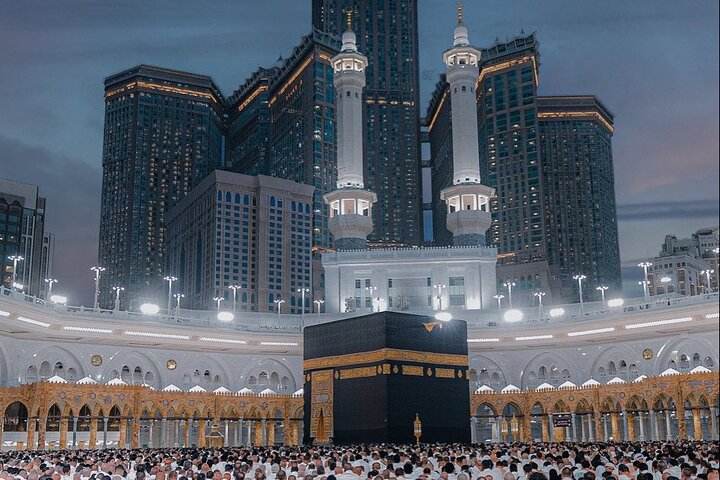
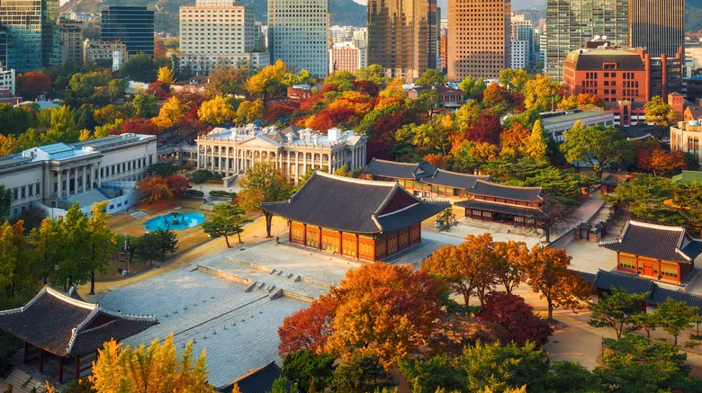
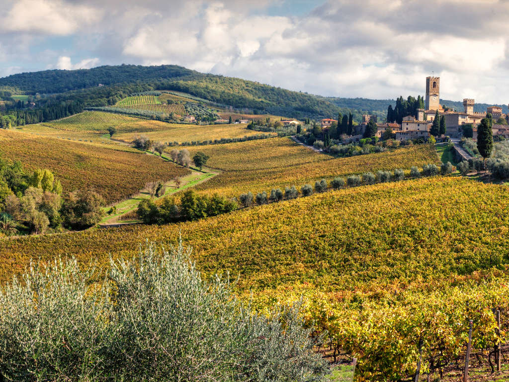

MAKKAH “My first dream place is Mecca. I really want to go there one day because it is a very special and holy place for Muslims. Mecca gives a peaceful and calm feeling, and many people visit it for Hajj and Umrah. I want to experience the beautiful atmosphere and pray there. Visiting Mecca is one of my biggest dreams because it can bring me closer to Allah.” |
SEOUL  “My second dream place is Seoul. I really want to visit Seoul one day because it is a modern and beautiful city. I love its culture, food, and fashion, and I also want to experience the K-pop and drama culture. I would like to explore famous places like Namsan Seoul Tower and enjoy the city atmosphere. Seoul looks exciting and unforgettable.” |
TUSCANY  “My dream place is Tuscany. I really want to visit Tuscany one day because it is a beautiful and peaceful place with amazing scenery. I love the green hills, small villages, and calm atmosphere there. Tuscany looks relaxing and unforgettable, and I would love to experience it myself.” |